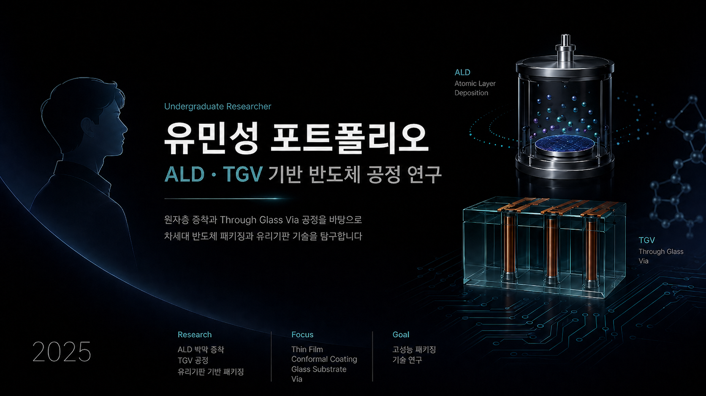

Research Identity
FNMR 학부 연구생 활동을 통해 ALD 박막 증착, TGV 공정, 유리기판 기반 패키징 등 반도체 공정의 핵심 요소를 학습하고 있습니다.
Undergraduate Researcher
ALD와 TGV 기반 반도체 공정 연구를 중심으로 소재·화학공학적 관점에서 차세대 반도체 패키징과 공정 기술을 탐구합니다.

FNMR 학부 연구생 활동을 통해 ALD 박막 증착, TGV 공정, 유리기판 기반 패키징 등 반도체 공정의 핵심 요소를 학습하고 있습니다.
공정 조건, 박막 균일도, 결함 분석, 소재·구조 최적화를 중심으로 실무형 반도체 공정 역량을 확장하고 있습니다.
소재와 공정을 함께 이해하는 반도체 엔지니어로 성장하여 고성능 패키징과 제조 기술 발전에 기여하는 것을 목표로 합니다.
Selected Projects
ALD, TGV, 유리기판 기반 공정과 차세대 반도체 패키징 기술을 중심으로 연구 활동을 수행합니다.
자세히 보기 →반도체 제조 공정 흐름과 주요 불량 발생 원인을 학습하며 공정 분석 역량을 쌓았습니다.
자세히 보기 →시험·평가 기관의 업무 환경을 경험하며 기술 문서, 장비, 실무 프로세스에 대한 이해를 높였습니다.
자세히 보기 →디스플레이 공정과 소자 구조에 대한 중급 수준의 교육을 통해 전자재료 분야 이해도를 확장했습니다.
자세히 보기 →Summary